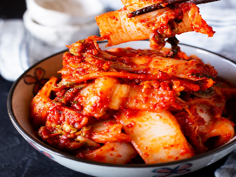

Kimchi
Essa receita terá 3 tópicos de ingredientes:
1. Acelga e nabo
2. Tempero
3. Mistura final
Você irá precisar de um pote grande que vedebem para guardar a conserva
Ingredientes
1. Acelga e Nabo
1 maço de acelga
1 nabo descascado
Fatie a acelga em tiras e em seguida quadrados e salgue. Reserve
Fatie o nabo em tirinhas finas, salgue e reserve
Em ambos, coloque algo pesado em cima para que murchem
Quando a acelga estiver flexivel e não quebrar ao dobrar, ela está pronta
Escorra bem
2. Tempero
2 pera madura (pode substituir por maçã)
3 colheres de sopa de arroz cozido
4 dentes de alho
1 Cebola grande
2 pimentão vermelho grande sem sementes
60 ml de caldo dashi ou água (pode substituir com 2 pacotinhos de Kombu e Shiitake em pó)
3 colheres de sopa de açúcar
2 colheres de sopa molho de peixe ou peixe em pó
Mingau de arroz
Bata todos os ingredientes no liquidificador
Mistura final
2 maçãs maduras
1 maço de cebolinha
3 colheres de sopa açúcar
2 colheres de chá sal refinado
60 g de gochugaru (pimenta coreana)
Cortar a cebolinha em pedaços grandes (mais ou menos 5cm)
Coloque uma luva e misture todos os ingredientes em uma tigela
Deixe em um pote bem vedado e deixe uma noite fora da geladeira, para fermentar
Após isso, guarde na geladeira